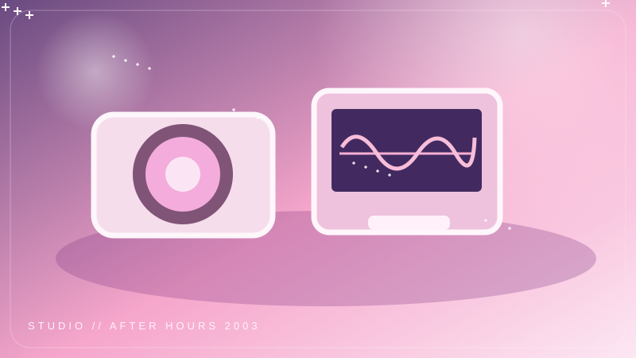
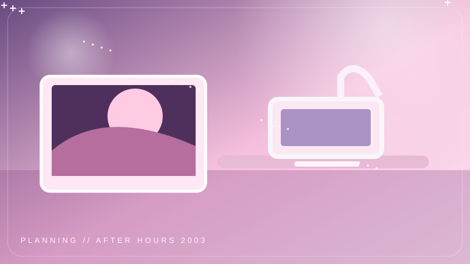
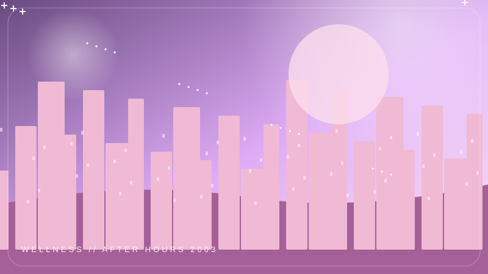

VOLUME 001 · SIDE A · 2003
Your space, your pace. ✧
One planner. Less noise. A little more magic.
✦ FOCUS.DECK
OPEN TODAY ↗SELECT A SESSION · SAY THE TIMER TO SIRI
♡ Tap a session to get a Siri phrase. Timers are not launched here.

TODAY · ONE THING AT A TIME
✧Your actual checkable tasks stay in Notion, not copied into this design.
THE RHYTHM
✳QUICK CAPTURE
✧A thought appears? Save it where you'll actually find it later. No extra app. No second planner.
✎ Open my Notion inbox ↗＋ Add a task ↗◇ View projects ↗Little worlds to explore ♡
Each card opens a real Notion page
PLANNINGA gentler kind of momentum.↗
WELLNESSMind · movement · reset↗STUDIOKeep making your own magic.↗HOMESmall resets, softer space.↗INSPIRATIONSave the beautiful little things.↗AFTER HOURS / 2003 EDITION · Made for real days, not perfect days. Your task database, project database, and journal stay native to Notion. The focus buttons give Siri phrases for now; Apple Shortcuts integration is paused. Open full Notion planner ↗